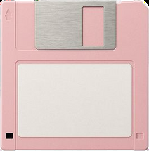

WELCOME HERE !
SUBJECT

To listen my podcast
My last article
Fanzine
To follow my research

My research project aims to establish a connection between the construction of a media aesthitic associates with the figure of Lolita as an instrument of blacklash or as a model of female emancipation.
Click here
Reco of the month